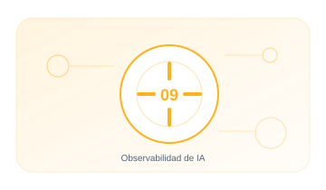

09 · PILAR
Observabilidad de IA
Entender qué hace el sistema, por qué falla y cuándo intervenir.
EnfoqueTécnico, práctico y entendible
Contenido6 guías extensas y aplicables
Aplicable aOrganizaciones y sistemas reales

09.01 · GUÍA
Observabilidad LLM
Registra solicitudes. respuestas. consumo. latencia y errores con privacidad.
16–22 min+1.586 palabrasAbrir guía →
09.02 · GUÍA
Observabilidad RAG
Mide retrieval. fuentes. calidad del contexto y groundedness.
15–21 min+1.559 palabrasAbrir guía →
09.03 · GUÍA
Observabilidad de agentes
Traza decisiones. acciones. tools. memoria. delegaciones y bucles.
15–21 min+1.550 palabrasAbrir guía →
09.04 · GUÍA
Observabilidad de seguridad
Detecta inyección. jailbreak. abuso. exfiltración y comportamientos anómalos.
15–21 min+1.528 palabrasAbrir guía →
09.05 · GUÍA
Métricas y SLO
Define objetivos equilibrados de calidad. seguridad. coste y disponibilidad.
15–21 min+1.526 palabrasAbrir guía →
09.06 · GUÍA
Integración SIEM
Normaliza eventos de IA y crea casos de uso accionables para el SOC.
15–21 min+1.551 palabrasAbrir guía →
01
SeñalesControl y evidencia aplicable
02
TrazasControl y evidencia aplicable
03
UmbralesControl y evidencia aplicable
04
AlertasControl y evidencia aplicable
05
DecisiónControl y evidencia aplicable
Cada guía incluye explicación, implantación, controles, evidencias, errores habituales, métricas y referencias.